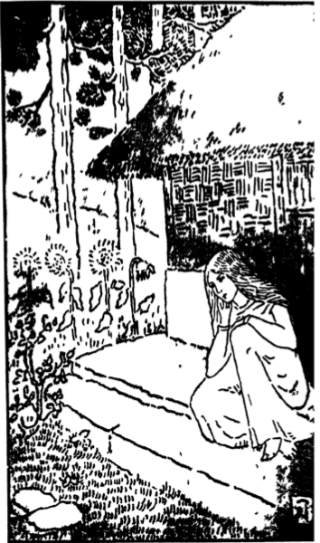

শকুন্তলা
এক নিবিড় অরণ্য ছিল। তাতে ছিল বড় বড় বট, সারিসারি তাল তমাল, পাহাড় পর্বত, আর ছিল— ছােটো নদী মালিনী। মালিনীর জল বড়ো স্থির আয়নার মতাে। তাতে গাছের ছায়া, নীল আকাশের ছায়া, রাঙা মেঘের ছায়া— সকলি দেখা যেত। আর দেখা যেত গাছের তলায় কতগুলি কুটিরের ছায়া।
নদীতীরে যে নিবিড় বন ছিল তাতে অনেক জীবজন্তু ছিল। কত হাঁস, কত বক, সারাদিন খালের ধারে বিলের জলে ঘুরে বেড়াত। কত ছােটো ছােটো পাখি, কত টিয়াপাখির ঝাঁক গাছের ডালে ডালে গান ইত, কোটরে কোটরে বাসা বাঁধত। দলে দলে হরিণ, ছােটো ছােটো হরিণশিশু, কুশের বনে, ধানের খেতে, কচি ঘাসের মাঠে খেলা করত। বসন্তে কোকিল গাইত, বর্ষায় ময়ূব নাচত।
এই বনে তিন হাজার বছরের এক প্রকাণ্ড বটগাছের তলায় মহর্ষি কথদেবের আশ্রম ছিল। সেই আশ্রমে জটাধারী তপস্বী কথ আর মা-গৌতমী ছিলেন, তাদের পাতার কুটির ছিল, পরনে বাকল ছিল, গােয়াল-ভরা গাই ছিল, চঞ্চল বাছুর ছিল, আর ছিল বাকলপরা কতগুলি ঋষিকুমার। তারা কথদেবের কাছে বেদ পড়ত, মালিনীর জলে তর্পণ করত, গাছের ফলে অতিথিসেবা করত, বনের ফুলে দেবতার অঞ্জলি দিত। আর কী করত?
বনে বনে হােমের কাঠ কুড়িয়ে বেড়াত, কালাে গাই ধলাে গাই মাঠে চরাতে যেত। সবুজ মাঠ ছিল তাতে গাই-বাছুর চরে বেড়াত, বনে ছায়া ছিল তাতে রাখাল-ঋষিরা খেলে বেড়াত। তাদের ঘর গড়বার বালি ছিল, ময়ুর গড়বার মাটি ছিল, বেণুবাঁশের বাঁশি ছিল, বটপাতার ভেলা ছিল; আর ছিল খেলার সাথী বনের হরিণ, গাছের ময়ুর; আর ছিল—মা-গৌতমীর মুখে দেবদানবের যুদ্ধ কথা, তাত করে মুখে মধুর সামবেদ গান।
সকলি ছিল, ছিল না কেবল আঁধার ঘরের মাণিক- ছছাটো মেয়ে- শকুন্তলা। একদিন নিশুতি রাতে অপ্সরী মেনকা তার রূপের ডালি দুধের বাছা- শকুন্তলা-মেয়েকে সেই তপােবনে ফেলে রেখে গেল। বনের পাখিরা তাকে ডানায় ঢেকে বুকে নিয়ে সারা রাত বসে রইল।
বনের পাখিদেরও দয়ামায়া আছে, কিন্তু সেই মেনকা পাষাণীর কি কিছু দয়া হল। খুব ভােরবেলায় তপােবনের যত ঋষিকুমার বনে বনে ফল ফুল কুড়তে গিয়েছিল। তারা আমলকী বনে আমলকী, হরীতকী বনে হরীতকী, ইংলী ফলের বনে ইংলী কুড়িয়ে নিলে ; তারপরে ফুলের বনে পূজার ফুল তুলতে তুলতে পাখিদের মাঝে ফুলের মত সুন্দর শকুন্তলা মেয়েকে কুড়িয়ে পেলে। সবাই মিলে তাকে কোলে করে তাত কথের কাছে নিয়ে এল। তখন সেই সঙ্গে বনের কত পাখি, কত হরিণ, সেই তপােবনে এসে বাসা বাঁধলে।
শকুন্তলা সেই তপােবনে, সেই বটের ছায়ায় পাতার কুটিরে, মাগৌতমীর কোলে-পিঠে মানুষ হতে লাগল।
তারপর শকুন্তলার যখন বয়স হল তখন তাত কথ পৃথিবী খুঁজে শকুন্তলার বর আনতে চলে গেলেন। শকুন্তলার হাতে তপােবনের ভার দিয়ে গেলেন।
শকুন্তলার আপনার মা-বাপ তাকে পর করলে, কিন্তু যারা পর ছিল তারা তার আপনার হল। তাত কথ তার আপনার, মা-গৌতমী তার আপনার, ঋষিবালকেরা তার আপনার ভাইয়ের মতাে। গােয়ালের গাইবাছুর সে-ও তার আপনার, এমন-কি- বনের লতাপাতা তারাও তার আপনার ছিল। আর ছিল তার বড়ােই আপনার দুই প্রিয়সখী অনসূয়া, প্রিয়ম্বদা; আর ছিল একটি মা-হারা হরিণশিশুবড়ােই ছােটো-বড়ােই চঞ্চল। তিন সখীর আজকাল অনেক কাজ- ঘরের কাজ, অতিথি-সেবার কাজ, সকালে-সন্ধ্যায় গাছে জল দেবার কাজ, সহকারে মল্লিকালতার বিয়ে দেবার কাজ; আর শকুন্তলার দুই সখীর আর একটি কাজ ছিল— তারা প্রতিদিন মাধবীলতায় জল দিত আর ভাবত, কবে ওই মাধবীলতায় ফুল ফুটবে, সেই দিন সখী শকুন্তলার বর আসবে।
এ-ছাড়া আর কী কাজ ছিল?— হরিণশিশুর মতাে নির্ভয়ে এ-বনে সে-বনে খেলা করা, ভ্রমরের মত লতাবিতানে গুগু গল্প করা, নয় তাে মরালীর মতাে মালিনীর হিম জলে গা ভাসানো; আর প্রতিদিন সন্ধ্যার আঁধারে বনপথে বনদেবীর মতাে তিন সখীতে ঘরে ফিরে আসা—এই কাজ। একদিন-দক্ষিণ বাতাসে সেই কুসুমবনে দেখতে দেখতে প্রিয় মাধবীলতার সর্বাঙ্গ ফুলে ভরে উঠল। আজ সখীর বর আসবে বলে চঞ্চল হবিণীর মতো চঞ্চল অনসূয়া প্রিয়ম্বদা আবাে চঞ্চল হয়ে উঠ।